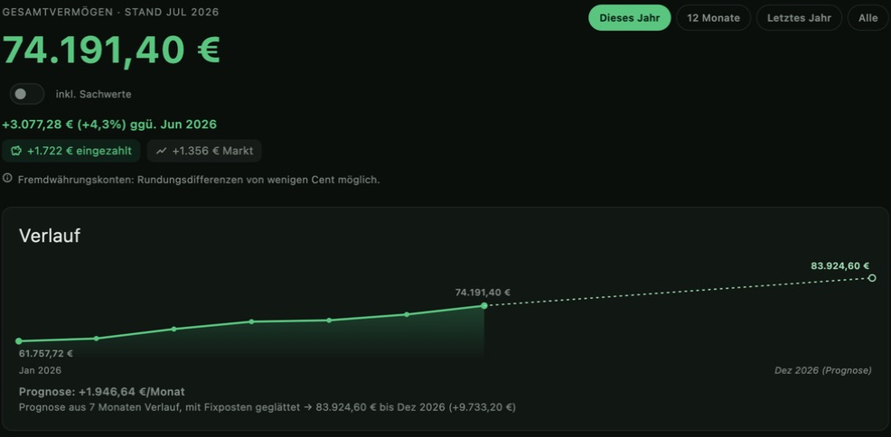
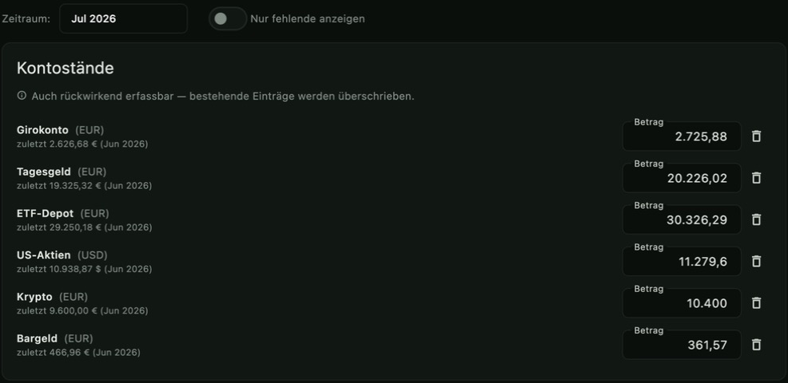
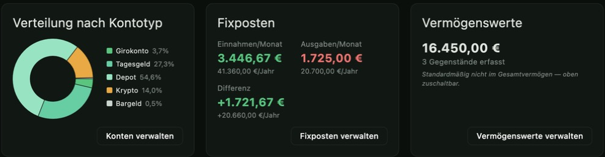
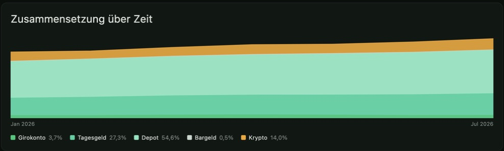
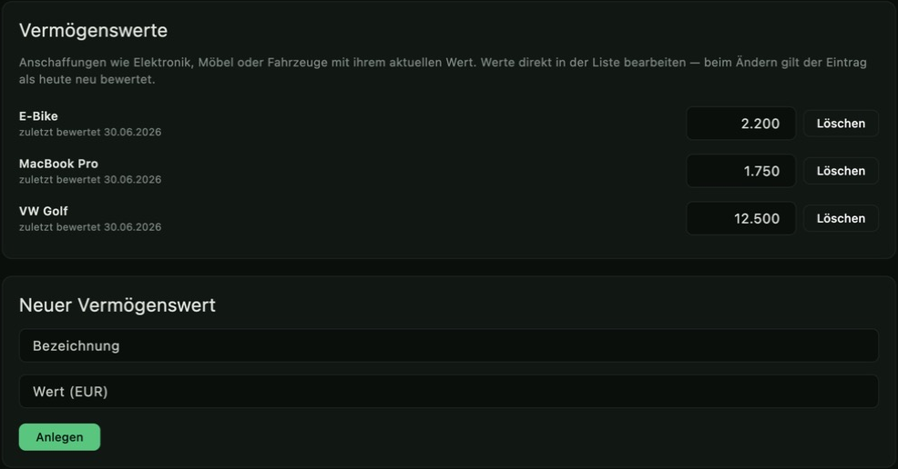
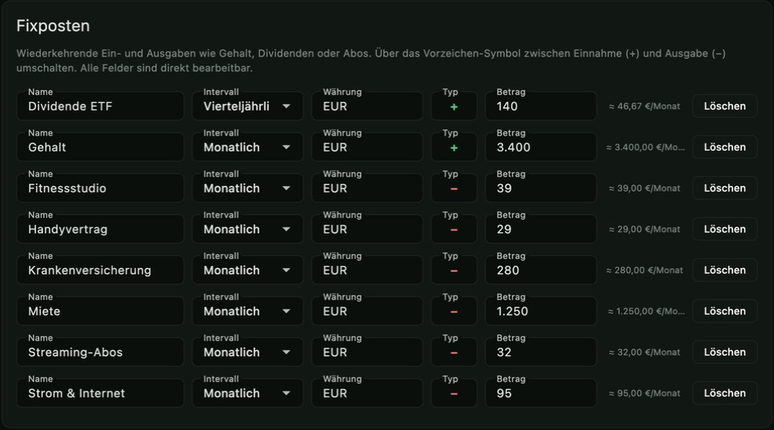
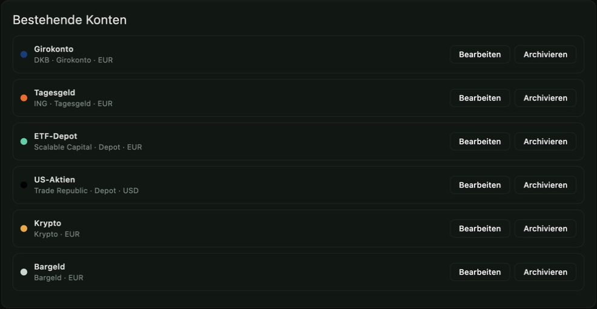

Für Linux, macOS & Windows · kein Account nötig · Daten bleiben auf deinem Gerät
LinuxmacOSWindows100% lokalAES-256-GCMQuelloffen

Das Dashboard: dein Gesamtvermögen, der Verlauf und die Prognose auf einen Blick.
Was Nutzer:innen sagen
„Die App sieht nice aus! Hatte direkt Lust mein Budget zu planen!“
— Jennifer T.
„Die App ist visuell so ruhig gestaltet und die Erklärungen so eingängig, dass ich sie entspannt
und angstfrei nutzen kann, obwohl das Thema Finanzen für mich eine Herausforderung darstellt!“
Von der ersten Zahl bis zur Prognose — so fühlt sich Überblick an.
Einmal im Monat
In ein, zwei Minuten sind alle Konten erfasst
Einmal im Monat trägst du deine Kontostände ein — alle auf einer Seite, jeweils mit dem letzten Wert als Gedächtnisstütze. In zwei Minuten bist du fertig, den Rest erledigt FinanzGecko. Kein Tabellen-Wirrwarr, keine zwanzig offenen Tabs, kein Copy-and-Paste.

Einträge — alle Kontostände eines Monats in einem Rutsch, jederzeit rückwirkend korrigierbar.Mehr als bloße Summen
Sehen, worauf dein Vermögen ruht
Wie viel steckt im Depot, wie viel liegt einfach bar herum? Die Verteilung nach Kontotyp zeigt es in Sekunden. Direkt daneben laufen deine Fixposten zusammen: Einnahmen, Ausgaben und der monatliche Überschuss, der deinen ganzen Verlauf antreibt.

Kennzahlen — Verteilung nach Kontotyp, monatlicher Überschuss und Sachwerte nebeneinander.Wachstum sichtbar gemacht
Zuschauen, wie sich Schicht um Schicht aufbaut
Jede Farbe ein Kontotyp, jeder Monat eine Schicht mehr: Die Zusammensetzung über Zeit zeigt dir, ob dein Depot oder dein Sparkonto den Ausschlag gibt — und wie sich das über die Monate verschiebt.

Zusammensetzung über Zeit — wie sich dein Vermögen Monat für Monat aufbaut.Nicht nur Kontostände
Auch was in der Garage steht, zählt
E-Bike, MacBook, das Auto — Sachwerte gehören zu deinem Vermögen, tauchen auf keinem Kontoauszug auf. Erfasse sie mit ihrem aktuellen Wert, und FinanzGecko erinnert dich, sie hin und wieder neu zu bewerten. Per Schalter nimmst du sie ins Gesamtvermögen auf oder lässt sie bewusst außen vor.

Vermögenswerte — Sachwerte wie Elektronik, Möbel oder Fahrzeuge, inklusive Erinnerung zur Neubewertung.Was jeden Monat kommt und geht
Gehalt, Miete, Abos — automatisch auf den Monat gerechnet
Wiederkehrende Ein- und Ausgaben pflegst du ein einziges Mal, ob monatlich, vierteljährlich oder jährlich. FinanzGecko normiert alles auf ein Monatsäquivalent, damit dein Überschuss stimmt und die Prognose weiß, womit sie rechnet.

Fixposten — wiederkehrende Ein- und Ausgaben, sauber auf ein Monatsäquivalent normiert.Dein Fundament
Deine Bank, deine Farbe
Girokonto, Tagesgeld, Depot, Krypto, Bargeld: Lege so viele Konten an, wie du brauchst, in Euro oder Fremdwährung. Über 40 gängige Banken und Neobanken bekommen automatisch ihre echte Markenfarbeⓘ — alles bleibt dabei auf deinem Rechner, AES-256-verschlüsselt. Kein Bank-Login, keine Cloud, kein Konto bei uns.

Konten — alle Geldtöpfe an einem Ort, mehrwährungsfähig und vollständig lokal.
Was FinanzGecko kann
Gebaut für den vollständigen Überblick über dein Vermögen — ohne Kompromisse bei Privatsphäre.
Verlauf & Prognose
Zeitreihen-Chart deines Gesamtvermögens inklusive Trend-basierter Prognose, damit du siehst, ob du im Plan liegst.
Alle Konten an einem Ort
Girokonto, Tagesgeld, Depot, Bargeld, Krypto — mit monatlicher Erfassung für alle Konten auf einmal.
Fixposten
Gehalt, Miete, Abos und Dividenden als wiederkehrende Posten pflegen — automatisch auf ein Monatsäquivalent normiert.
Vermögenswerte
Sachwerte wie Elektronik, Möbel oder Fahrzeuge erfassen, mit automatischer Erinnerung zur Neubewertung.
Kennzahlen & Verteilung
Bester/schwächster Monat, Ø-Veränderung und Verteilung nach Kontotyp auf einen Blick.
Ende-zu-Ende lokal
AES-256-GCM-verschlüsselt, Schlüssel im OS-Keychain, kein Netzwerkzugriff außer für öffentliche Wechselkurse.
Warum FinanzGecko
Kein AccountKeine Registrierung, kein Login, keine Telemetrie.
QuelloffenQuellcode frei einsehbar auf GitHub.
KostenlosKeine Abos, keine In-App-Käufe.
Download
Immer derselbe quelloffene Vermögenstracker — wähle den Weg, der dir am liebsten ist.
Kostenlos & quelloffen
Installer für Linux, macOS und Windows — immer die neueste Version. Quellcode frei einsehbar (GPL-3.0, nicht-kommerziell).
FinanzGecko ist und bleibt kostenlos. Wer möchte, unterstützt die Weiterentwicklung freiwillig — mit einem Betrag deiner Wahl, ganz ohne Abo oder Verpflichtung.
Ja. FinanzGecko ist quelloffen und über GitHub Releases dauerhaft kostenlos nutzbar — ohne Abo und ohne In-App-Käufe.
Wo werden meine Daten gespeichert?
Ausschließlich lokal auf deinem Gerät, in einer einzigen AES-256-GCM-verschlüsselten Datei. Es gibt keine Cloud-Synchronisierung und keinen Server.
Brauche ich einen Account?
Nein. FinanzGecko hat kein Login und keine Registrierung — die App startet direkt einsatzbereit.
Welche Plattformen werden unterstützt?
Linux, macOS und Windows als native Desktop-Anwendung. Es gibt bewusst keine mobile App und keine Web-Version: die Banking-Apps auf deinem Smartphone sind schon der richtige Ort, um kurz den Kontostand zu checken — FinanzGecko ist stattdessen der Ort für den ruhigen Moment einmal im Monat, in dem du diese Zahlen erfasst und den Vermögensverlauf über die Zeit im Blick behältst.
Wie installiere ich FinanzGecko für mein Betriebssystem?
Windows: Installer starten und den Anweisungen folgen. macOS: FinanzGecko.app öffnen oder in den Programme-Ordner ziehen. Linux: AppImage ausführbar machen und z. B. in einen Anwendungsordner legen.
Wie bekomme ich Updates?
Es gibt keinen Auto-Updater: Update bedeutet, das neue Release-Artefakt von GitHub zu laden — Windows-Installer erneut ausführen, Linux-AppImage bzw. macOS-App ersetzen.
Unter welcher Lizenz steht FinanzGecko?
GPL-3.0 mit Commons-Clause-Zusatz: Quellcode frei einsehbar, veränderbar und weitergebbar (Copyleft) — aber nicht für kommerzielle Zwecke nutzbar. Details in der LICENSE-Datei im Repository.
Werden meine Kontostände automatisch von der Bank importiert?
Nein. FinanzGecko liest keine Bankkonten aus (kein Online-Banking/PSD2-Zugriff) — du trägst Kontostände bewusst manuell ein. Die App erinnert dich an fällige Erfassungen, aber nur solange sie geöffnet ist. Richte dir daher zusätzlich eine monatliche Erinnerung auf dem Smartphone ein.
Ist FinanzGecko ein Haushaltsbuch?
Nein. FinanzGecko trackt dein Gesamtvermögen auf Monatsbasis — keine Einzelbuchungen, keine Kategorien für Ausgaben wie Lebensmittel oder Freizeit. Für die tägliche Ausgabenkontrolle sind klassische Haushaltsbuch-Apps besser geeignet; FinanzGecko zeigt dir stattdessen, wie sich dein Vermögen über Monate und Jahre entwickelt.
Welche Banken werden unterstützt?
Über 40 Banken, Neobanken, Autobanken und Broker bekommen automatisch ihre echte Markenfarbe, darunter Sparkasse, Volksbank/Raiffeisenbank, Deutsche Bank, Commerzbank, HypoVereinsbank, Targobank, Santander, Postbank, Sparda-Bank, Apobank, BBBank, norisbank, OLB, ING, DKB, N26, comdirect, Consorsbank, C24, bunq, Vivid Money, Openbank, Solarisbank, Klarna, OSKAR, Qonto, Volkswagen Bank, Mercedes-Benz Bank, BMW Bank, Audi Bank, Ford Bank, Renault Bank, Trade Republic, Scalable Capital, Smartbroker, eToro, Bitpanda, Advanzia Bank (Gebührenfrei), Hanseatic Bank, Barclays, PayPal, Wise und Revolut. Diese Liste ist bewusst nicht vollständig und wächst laufend — fehlt deine Bank, kannst du sie direkt im Konto-Formular vorschlagen (GitHub-Issue oder E-Mail). Ohne bekannte Bank wird automatisch die Farbe des gewählten Kontotyps verwendet.